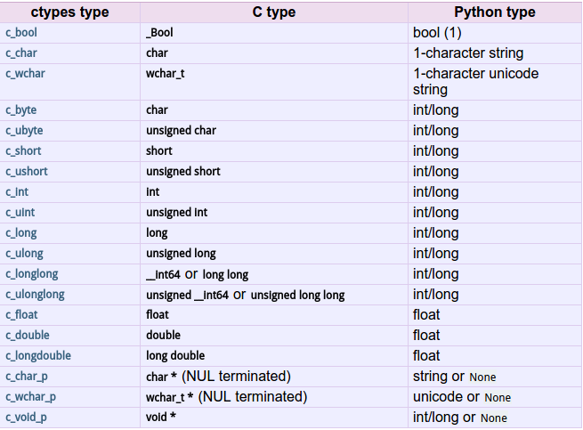

我们在写python的时候，往往希望将一些性能要求较高的部分交给C/C++来完成。python提供了ctypes模块，可以很方便的将python与C/C++联系起来。
ctypes简介
ctypesis a foreign function library for Python. It provides C compatible data types, and allows calling functions in DLLs or shared libraries. It can be used to wrap these libraries in pure Python.
以上取自Python 2.7.10 Documentation翻译一下大约就是 ctypes是个Python的外部语言函数库。它提供了内建C数据类型，并且允许调用链接库中的函数。它让你能用Python包装这些共享库。(渣翻见谅)
总之，ctypes可以让我们在Python中使用C的类型，调用C的函数。这也是体现Python强大“胶水”特性的地方。
ctypes基本使用
#首先引入ctypes库 |
可以看到，只需加载库文件，之后就可以几乎完全按照C的语法调用函数，得到结果。其中，ctypes类型、C类型和Python类型的对应如下：

ctypes进阶使用
如果用到了结构体，可以定义一个类继承ctypes.Structure代表结构体。同理，可以继承ctypes.Union代表共用体。比如：class _StructTime(ctypes.Structure):
_fields_ =[('day',c_ubyte),
('month',c_ubyte),
('year',c_ushort),
('hour',c_ubyte),
('minute',c_ubyte),
('second',c_ubyte)];
def __str__(self):
return '{0}-{1}-{2} {3}:{4}:{5}'.format(self.year,self.month,self.day,self.hour,self.minute,self.second)
如果用到指针，可以使用ctypes.addressof()获取地址。
更详细的介绍可参见：
Python 2.7.10 ctypes Documentation